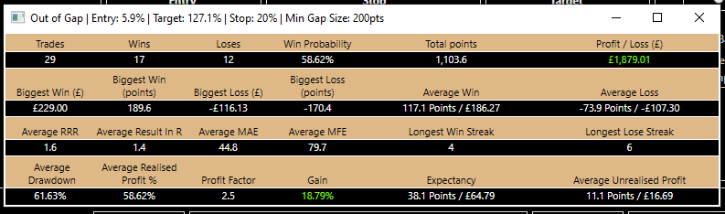

Gap Trader
Introduction
Gap Trader is a tool for finding and testing day-trading strategies on the financial markets. Since the strategies are based around the opening and closing cash price gaps it is best used with the major stock market indices such as the FTSE, Dax and Dow Jones. Furthermore, keeping costs low in the form of tight buy/sell spreads is essential when it comes to finding profitable short-term trading strategies.
The Gap Fill Strategy
The strategy uses Fibonacci levels derived from the daily open/close gap to generate entry and target levels. There are two variations of the strategy; one trades into the gap and the other trades out of it.
Trading into the gap involves aiming to enter the market at a selected Fibonacci extension level with a target at a selected Fibonacci retracement level, as illustrated above.
Trading out of the gap is the opposite. It aims to enter at a selected Fibonacci retracement level with a target at a selected Fibonacci extension level.
In both strategies a stop-loss of either a fixed points size or percentage of the gap size can be selected. Whether the stop-loss trails the market price and by how much can also be chosen.
Other important details to note are:
- Each strategy will only make a maximum of one trade per day
- If the entry level is not reached on any given day there is no trade
- Trades are not held from one day to the next, if the target or stop-loss is not hit they are closed at the closing price of the final minute candle of the day regardless of any profit or loss
Managing Data
Use the Data Management tab to upload and manage data-sets for use on the Gap Trader's Strategy Tester. Any unfilled gaps are found and statistics generated based on the Fibonacci retracement and extension levels. These can highlight important support and resistance levels and be useful making decisions in any trading strategy.
To upload a new data-set select the files with daily open, high, low, close (OHLC) candle data and one minute bid and ask OHLC data. Up to three years worth of one minute data can be downloaded for free from Dukascopy. For for best results download the daily data from Yahoo Finance to get the official open and close prices. Alternatively, select Derive Daily Levels from Minute Data to allow the application to calculate the daily open and close prices from the minute data using the mid-point of bid and ask candles data.
Note: It is important the correct timezone is selected so that cash price data can be identified and separated from futures.
New data can be added to existing data-sets in the same way. However, care should be taken to ensure the new data directly follows or overlaps the existing data to prevent potentially inaccurate gaps and levels being calculated.
Testing and Finding Strategies
The strategy tester is used for back-testing specific gap-fill strategies with chosen entry and target Fibonacci levels and stop-loss size and management. Alternatively, the strategies can be searched for; the strategy finder back-tests all the selected combinations and displays any profitable results.
Communal Controls
The options selected in the Communal Controls are on both the Manual Test and automatic Strategy Finder.
- Use the radio buttons to select the type of gap-fill strategy test (see above, The Gap Fill Strategy)
- Set the account starting balance and the percentage to risk on each trade
- The start and end dates selects when to start and end the test
- The start time can restrict entering a trade before the selected time on each day - defaults the market open time
- The end time can ensure any open trade is closed before the selected time on each day - defaults to the market close time
- Trade direction enables only taking long trades or only taking short trades
Manual Test
Use the Manual Test to back-test a specific entry, target and stop-loss strategy. Entries and targets can be Fibonacci retracement or extension levels, or a fixed number of points from the market's daily opening price. When the Fibonacci options are selected the text-boxes can adjust the entry or target by a chosen number of points to fine-tune the strategy.
The stop-loss size can be either a fixed number of points or percentage of the gap size on the day of the trade. Stop management offers trail the stop-loss at a chosen number of points behind the market once the trade is in profit by that amount. In this case, the stop-loss is updated at the start of each minute.
A minimum gap size can be entered to restrict taking trades to days the daily gap size in points exceeds the chosen value.
The trades and equity curve generated by the strategy can be viewed using the buttons in the strategy metrics box. Further statistics can be seen by clicking elsewhere on the metrics, as shown below. 
Strategy Finder
The Strategy Finder is used for searching for the most profitable strategies. Alternative criteria such as trade win percentage, profit factor or trade expectancy can be used with the filtering and sorting functions to find a desirable strategy.
Fixed entry and target levels can be selected. This tests only those levels against all the combinations of the other criteria. Not selected a fixed entry or target level will include all combinations of each one in the search.
The filters remove any trades that do not meet the chosen criteria from the search results. Clicking a header column will sort the results by that field.
Similar to the Manual Test, the more detailed strategy metrics can be viewed by clicking on the strategy row. The strategy details (entry, target and stop-loss) appear in the window's title bar.